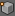
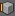
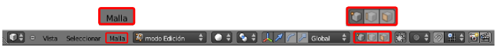
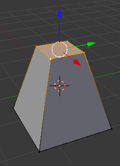
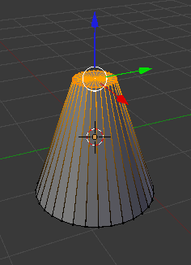
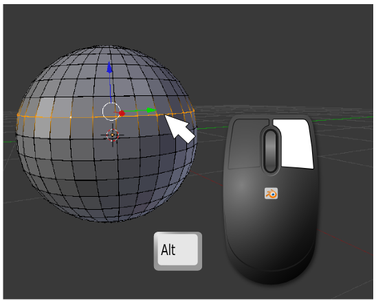

Vértices, lados, caras
Ha habido más cambios aunque es posible que nos hayan pasado desapercibidos. Por ejemplo en el menú de Vista 3D ya no aparece Objeto sino Malla y en la zona de iconos hay una importantísima novedad en forma de tres iconos que hacen referencia a los tres entes geométricos: vértices , lados  y caras .

Usamos en Modo Edición  algo que ya sabemos que funciona en Modo Objeto
algo que ya sabemos que funciona en Modo Objeto  : se trata de seleccionar/deseleccionar todo con "A". Con esto aprendemos que nuevamente el color naranja hace referencia al elemento seleccionado. En esta imagen está todo deseleccionado.
: se trata de seleccionar/deseleccionar todo con "A". Con esto aprendemos que nuevamente el color naranja hace referencia al elemento seleccionado. En esta imagen está todo deseleccionado.
Los métodos de selección explicados en Modo Objeto  funcionan en Modo Edición
funcionan en Modo Edición  y alternaremos el modo de selección por vértices , lados o caras siempre que sea necesario para trabajar a gusto.
y alternaremos el modo de selección por vértices , lados o caras siempre que sea necesario para trabajar a gusto.
También podemos decir que las transformaciones mover, rotar y escalar funcionan igual que en Modo Objeto  así que en este punto recomendamos hacer una pausa y jugar con estas ediciones sin más pretensión que experimentar y pasar un buen rato.
así que en este punto recomendamos hacer una pausa y jugar con estas ediciones sin más pretensión que experimentar y pasar un buen rato.
Ejercitación
- Saca un cubo a escena y hazle un escalado ("S") a los cuatro vértices de una cara para conseguir un tronco de pirámide como puede ser este.

- Haz lo mismo pero en esta ocasión con un cilindro para obtener un tronco de cono.

- Experimenta con rotar ("R") y Mover ("G") hasta conseguir soltura en las transformaciones de grupos de caras y vértices.
Seleccionar cadenas de vértices
Si tenemos una esfera y queremos seleccionar un anillo haremos clic derecho con la tecla "Alt" pulsada. Es muy importante la colocación del puntero del ratón así que usamos zoom siempre que sea necesario para hacer el clic entre los dos vértices adecuados.
Haremos esto siempre que queramos seleccionar cadenas de vértices y, por supuesto, con "Shift" podremos acumular cadenas seleccionadas.
Limitar selección a visible
Al lado de los distintos modos de selección hay un icono más que facilita mucho el trabajo en función de las necesidades. Se denomina Limitar selección a visible  (activada por defecto) y podemos decir que se explica por sí sola. La activaremos y desactivaremos siempre con sentido común.
(activada por defecto) y podemos decir que se explica por sí sola. La activaremos y desactivaremos siempre con sentido común.